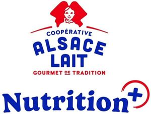

Trade Mark Journal No.2025/044 31 October 2025
WO0000001880458 (29)
Office of origin: France
Date of International Registration:28 August 2025
Date of designation in the UK:
28 August 2025

International priority date claimed: 8 July 2025
(France)
(5162468)
- Class 29
- Milk; butter; crème fraîche with the protected geographical indication "crème fraîche fluide d'Alsace"; snacks based on milk or white cheese; cheeses; fresh cheese; grated cheese; low-fat cheese; curd cheese; ripened cheeses; cheese spread; cheese fondue; cheese sticks; snacks made with cheese; white cheeses being plain, salted, herb-flavored, sweetened, fruit-flavored, with fruit compote or puree, or flavored; yogurts being plain, sweetened, fruit-flavored, with fruit compote or purée, or flavored; pudding-type yogurts; dairy-based preparations (with the exception of crème fraîche) for flambé tarts; dairy-based preparations (with the exception of crème fraîche) for manufacturing crème brûlée, custard, tiramisu, panna cotta; dairy-based preparations (with the exception of crème fraîche) for manufacturing dairy desserts; whey; milkshakes; milk beverages with milk predominating; fruit pulps; stewed fruit; jams; compotes.
SOCIETE COOPERATIVE AGRICOLE LAITERIE COOPERATIVE ALSACIENNE ALSACE-LAIT
Representative: Monsieur Girard Olivier IPSILON, 10 rue Jacques Kablé, F-67080 Strasbourg Cedex, FRANCE